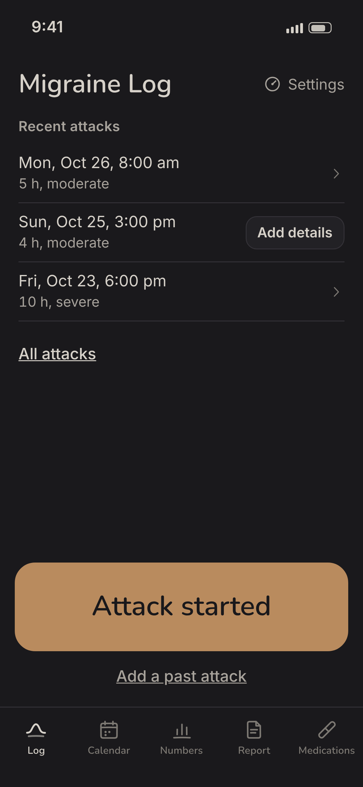
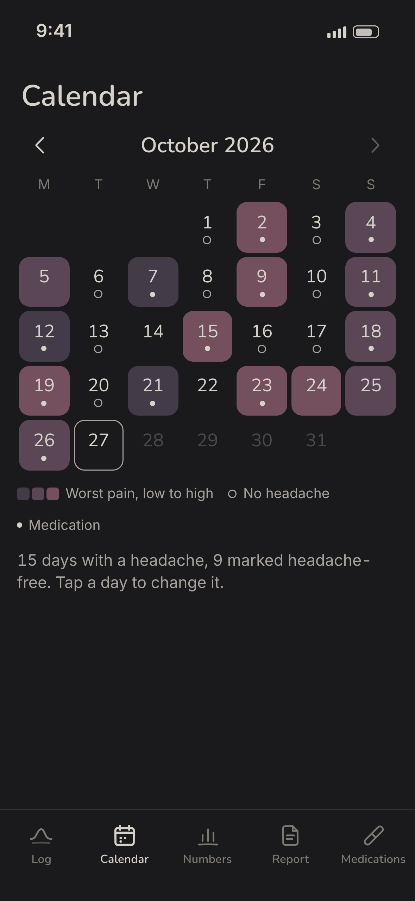
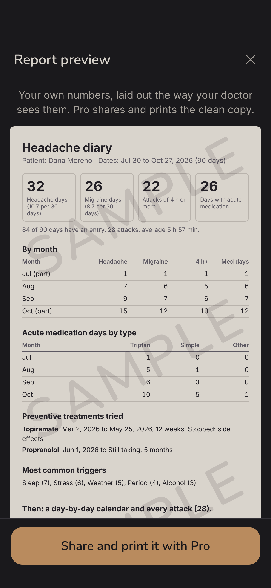

Log an attack in two seconds, keep track of your pain, symptoms and medications, see your headache days at a glance, and bring your doctor a report they can use. It works offline, and nothing leaves your phone.
Download on the App StoreFor iPhone. Logging is free. Migraine Log Pro adds the numbers and the report.



Doctors and insurers look at numbers: how many headache days a month, how many migraine days, how many attacks lasted 4 hours or more, how many days you took acute medication, and which preventives you already tried. Preventive treatments are often approved on exactly those counts. Migraine Log keeps them as you go and puts them on one page.
Everything stays on your iPhone. No account, no sign-in, no uploads, and it works in airplane mode. There are no weather or network features.
Migraine Log is a personal log. It does not diagnose, treat, or give medical or dosing advice, and it does not predict attacks. Talk to your doctor about your headaches and your medications.
Open the app and tap Attack started, the big button at the bottom of the screen. That saves the time and nothing else is needed. If you like, tap Mild, Moderate or Severe under it. When it is over, tap Attack over and the length is worked out for you. You can also touch and hold the app icon and choose Attack started. Pain, medication, triggers and notes can be added later, when you feel better.
Page 1 is a summary for the last 30, 90 or 180 days: headache days and migraine days per month, attacks of 4 hours or more, days with acute medication by type, the preventive treatments you tried with start and stop dates and why they stopped, and your most common triggers. Then a day-by-day calendar and a list of every attack. Each part ends with: Logged by the patient with Migraine Log. Not a diagnosis.
Yes. You keep your own list of medications and pick a type for each one (for example triptan or simple painkiller). The app counts the days each type was taken, per month and on the last 30 days. When a count reaches the levels doctors watch, it shows a calm note suggesting you share the report at your next visit. It never suggests doses or tells you to change anything.
No. Everything you log stays on your iPhone. There is no account, no analytics, no ads and no server. The report and the CSV are made on the phone and go only where you send them. The privacy policy has the details.
Logging, editing, headache-free days, this month's calendar and the last 30 days of attacks are free, always. Migraine Log Pro adds the monthly numbers and medication-day counter, the doctor report to share and print, your whole history and the CSV export. It is $4.99 a week with 3 days free for new subscribers, or $29.99 a year. Prices are in US dollars and can differ by country.